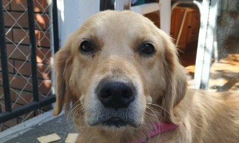
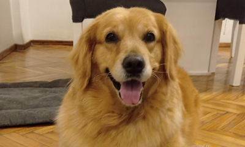
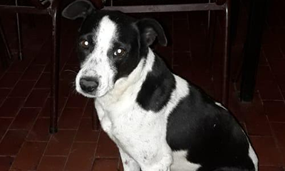
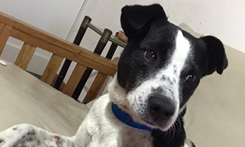
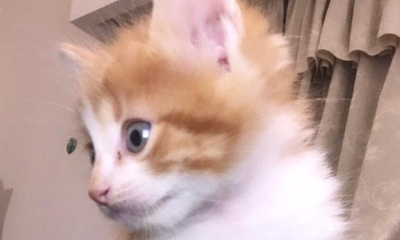
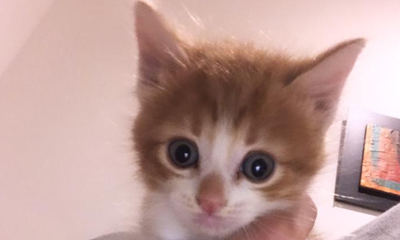
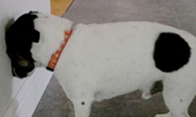
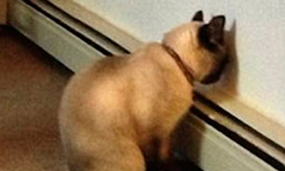
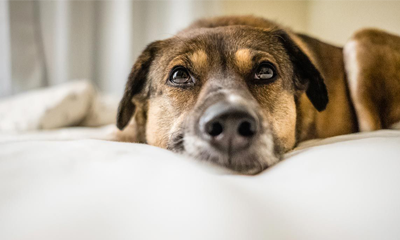
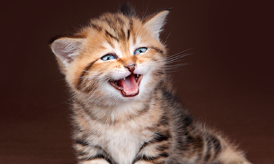

Pancha
¿Estás list@ para llorar?
Pancha es una Golden Retriever que encontraron abandonada en la calle en pleno invierno del 2020. Solita, con frío y tan, tan lastimada que si no la salvaban, se moría.
Su nueva familia la trasladó en plena cuarentena desde la ciudad de Moreno hasta la Capital de Buenos Aires.
"No entendía nada. Ni qué era el lugar donde estaba, ni quiénes éramos nosotros. No quiero pensar ni lo que pensó que le podíamos llegar a hacer" nos cuenta la mamá de Pancha.
A Pancha le contagiaron un tumor otros perros que, en celo, le abrieron la herida del tumor. Sobre esa lastimadura, llegaron los bichos. Su veterinario cuenta que le sacó 60 gusanos de su lastimadura.
Pancha nunca lloró.
Su familia cuenta que llegó muy asustada y triste. Se le veía en sus ojitos:
La historia no termina ahí. Tuvo que hacerse 3 operaciones en total:
- La primera, porque tenía una infección de útero tan grave que corría riesgo de vida.
- La segunda, porque le tomaron una muestra de un tumor que le salió después de la primera operación.
- La tercera, porque sufría incontinencia y perdía pis.
Capaz te preguntás: ¿Cómo lo logró? Bueno... con muuuchos tratamientos, medicamentos y amor Pancha salió adelante.
Ella nunca se dio por vencida. Y su familia tampoco.
¡Mirala ahora!
Y como Pancha, ¡hay muchos!
¿Te animás a ayudarlos como hizo la familia de ella?
Cano
Un viernes lluvioso y frío, Lucía escuchó el llanto de un perrito en un lugar muy parecido a un basural.
Cuando se acercó, se encontró con Cano: estaba atrapado entre unas maderas y no podía salir. Lucía no lo dudó ni un segundo. Lo ayudó a salir y lo llevó al veterinario.
Buscaron a su familia con una campaña en redes sociales, pensando que Cano se había escapado y alguien lo estaba buscando. Pero nadie preguntó por él.
Lucía decidió adoptarlo. "Al principio quería irse. Se ve que tenía miedo y no entendía mucho qué pasaba. Una vez, tuvimos que salir a correrlo porque si no vaya a saber dónde terminaba".
Pero su nueva familia tuvo paciencia, comprensión y amor. Y hoy Cano está más contento que nunca. Juega con cualquier cosa y cuando llega su familia a casa no para de saltar de la felicidad.
Y como Cano, ¡hay muchos!
¿Te animás a ayudarlos como hizo la familia de él?
Plini
Plini es un gatito bebé bastante travieso.
Le encanta correr y, cuando arranca, no para. Sin embargo, hubo una vez en la que estuvo cerca de no poder hacerlo nunca más.
"Íbamos caminando con mi novio y vimos que casi cruza la calle solo. Venían un montón de autos rapidísimo, porque era una avenida y el semáforo estaba en verde. Lo agarramos de milagro", nos cuenta Rodrigo, el papá de Plini.
Rodrigo también nos contó que Plini no tenía familia, estaba solito, mojado y sucio. Por eso, ese mismo día lo llevaron al veterinario, y hoy Plini sí tiene familia.
Y como Plini, ¡hay muchos!
¿Te animás a ayudarlos como hizo la familia de él?
Tu mascota apoya su cabeza contra la pared
El acto de presionar la cabeza contra la pared u otra superficie se denomina clínicamente “presión de cabeza”.
Es algo que tu mascota realiza de forma compulsiva y continuada en el tiempo. Un acto que no debe ser confundido con la llamada “embestida de cabeza” que es cuando tu perro o tu gato frota su cabeza contra vos u otro animal y que es una forma de expresar su cariño.
Cuando una mascota frota fuertemente la cabeza contra la pared puede indicar que sufre una enfermedad de tipo neurológico o algún daño en el sistema nervioso. Al igual que les sucede a las personas cuando sufren fuertes migrañas, tienden a presionar las sienes para menguar el dolor.
Entre las posibles patologías de perros o gatos que “presionan la cabeza” están:
- Desviación del hígado
- Tumores en el cerebro o cráneo
- Trastorno metabólico
- Envenenamiento tóxico
- Golpe en la cabeza
- Infección del sistema nervioso
- Accidente Cerebro-vascular (ACV)
- Encefalitis (inflamación del cerebro y la médula espinal)
- Encefalopatía Hepática
Si detectas esta señal, acudí a un veterinario cuanto antes para que haga un diagnóstico correcto.
 Otros síntomas asociados a este comportamiento
Si además de frotar la cabeza contra la pared, la mascota presenta alguno de estos síntomas, no dudes ni un minuto en acudir a una clínica veterinaria, el tiempo es oro.
- Caminar en círculos o dar vueltas sobre sí mismo
- Convulsiones
- Cadencia constante
- Problemas visuales o mirada perdida
- Quedarse inmóvil, sea mirando a la pared o en un rincón
- Cambios de humor sin justificación
Recordá que la “presión de cabeza” no es más que la forma que encuentra tu perro o gato de aliviar su dolor. Acudí al veterinario.
¿Por qué mi perro tiembla?
Cuando tu perro presenta temblores, se trata de un signo que no es específico de una edad determinada ni de una raza determinada. Entre las causas más comunes de los temblores en perros se encuentran situaciones de ansiedad o agitación, temores o descenso de la temperatura corporal.
Tu perro tiembla como respuesta a un estímulo externo pero también puede que lo haga como síntoma de una enfermedad, por sensación de dolor o por una intoxicación. Es importante poder distinguir algunas de las causas de los temblores para determinar la gravedad de la situación y poder actuar en consecuencia. Por eso, en este artículo te ayudamos a descifrar por qué puede estar tu perro padeciéndolos.
¿A qué nos referimos con los temblores?
Un temblor se caracteriza por ser un movimiento con una cadencia que se produce de manera involuntaria. Estos temblores afectan a todo el cuerpo o a tan solo una parte, por ejemplo la cabeza.
Las causas de los temblores en perros son de diferente índole y asimismo el tipo de temblor es diverso:
- Temblor intencional provocado por un temblor, en su inicio voluntario
- Temblor por postura en cabeza o extremidades que puede provenir de problemas de metabolismo
- Fasciculación muscular no rítmica de enfermedad motora
- Movimientos mioclónicos súbitos y localizados en un músculo
Causas de los temblores
1. Hipotermia
Un ambiente excesivamente frío durante un tiempo prolongado puede causar que la temperatura de tu perro (normalmente a unos 38ºC) baje drásticamente, comprometiendo sus funciones vitales. El efecto adverso de una medicación también puede ser la causante de que la temperatura de tu perro disminuya.
En cuanto a los síntomas, si tu perro sufre hipotermia estará apático, somnoliento y presentará temblores. Como medida inmediata se le puede proporcionar algo que le caliente, sin el peligro de quemarse, y agua azucarada o suero.
2. Fiebre e hipertermia
Con una temperatura en su cuerpo de más de 39ºC, hablamos de fiebre y en esta circunstancia de hipertermia se pueden producir temblores en perros.
La fiebre nos alerta de que existe una causa subyacente de tipo vírico o de alguna enfermedad que pueda ocurrir. Andá al veterinario para que evalúe a tu perro y puedan hacer que le baje la fiebre.
3. Hipoglucemia
La hipoglucemia es otra de las causas de los temblores en perros. No obstante, si tu perro tiene, de repente, una bajada del nivel de azúcar en sangre estamos ante un síntoma de que algo no está funcionando bien a nivel de absorción de nutrientes
Si tu perro tiene hipoglucemia tendrá que ser tratado por el veterinario, quien pautará una dieta específica y repartirá las tomas de alimento en horas concretas.
4. Temblores en la fase REM del sueño
Un sueño muy profundo es causa de temblores en perros, sobre todo en sus patitas. Es algo común y normal que no debe preocuparnos.
5. Exceso de ejercicio
Los temblores perro derivados por haber hecho una excesiva cantidad de movimiento físico tampoco son síntoma de enfermedad. Ahora bien, si tu perro se cansa en exceso después de sus salidas a correr, valora adaptar el nivel de esfuerzo a sus características y estado físico.
6. Los temblores en perros por dolor
En cuadros de artrosis y problemas articulares, tu perro presentará un dolor más o menos agudo y frecuente según el progreso de esta dolencia. Los temblores en perros por dolor también pueden tener causas digestivas, por lo que es importante poder determinar la raíz del problema y que el veterinario pueda decidir si le puede administrar algún analgésico.
7. Traumas y fobias
Los temblores en tu perro pueden ser un reflejo del estrés ante una situación que no sabe cómo gestionar. Miedos y fobias pueden estar actuando como causa psicológica en este caso.
¿Cuándo estamos ante una enfermedad patológica?
Si observas que tu perro tiembla y que estos episodios se repiten y son recursivos impidiéndole llevar su vida con normalidad, puede tratarse de una enfermedad. Entre estas dolencias encontramos infecciones como el moquillo de origen vírico, la cual a parte de causar temblores o tics también provoca vómitos y otros síntomas.
Un cerebelo inflamado puede dar temblores en perros como en el caso del síndrome de Shaker. En general, las enfermedades degenerativas también son causantes de temblores en perros. Como siempre, ante la más mínima duda, acudí al veterinario para que puedan examinar a tu perro.
Los temblores en perros tienen orígenes muy diferentes. Puede ser síntoma tanto de una hipotermia como de una enfermedad vírica. Es por tanto recomendable que tengas al día las vacunas y desparasitaciones y que acudas al menos una vez al año al veterinario, o de manera urgente si se diera el caso.
¿Por qué mi gato maúlla mucho?
Estas son las principales razones por las cuales tu gato maúlla mucho
1. Para saludarte
Si estás acostumbrado a un breve estallido de maullidos justo cuando llegas a casa, ¡felicidades! Tu gato realmente está feliz de verte. Estos maullidos son la forma en que tu gato dice "hola" y "dónde estuviste todo este tiempo". Acaricialo y hablale para corresponder a este saludo.
2. Para llamar tu atención
Maúllan para comunicarte que quieren jugar, caricias o para disfrutar de alguna golosina. Si tu gato te roza mientras maúlla, es probable que te necesite para pasar un buen rato y, si sigue aún después de jugar, probablemente quiera alguna golosina.
3. Para conseguir comida
Si tu gato no deja de maullar en ciertos momentos, siempre es una buena idea revisar su plato de comida. Si está vacío... ¡ya sabés por qué está maullando!
Sin embargo, no llenes el tazón de inmediato. Un buen truco es esperar hasta que tu gato deje de maullar antes de sacar la comida. De lo contrario, tu gato aprenderá que puede maullar y alimentarse, por lo que lo hará más.
4. Para decirte que no se siente bien
Si tu gato maúlla por la noche, podría estar tratando de decirte que algo anda mal. De hecho, muchas enfermedades, como las renales, del tracto urinario o artritis, pueden provocar que maúlle en busca de ayuda.
Si notas algo inusual sobre los sonidos que hace consultá al veterinario para descartar una posible enfermedad como sucede con los gatos mayores. Éstos pueden presentar el síndrome de disfunción cognitiva. Algunos de los síntomas incluyen confusión y maullidos por la noche.
5. Para indicar estrés
Si notás que tu gato maúlla más sobre de lo habitual, quizás se deba a estrés o cambios en su entorno.
Un cambio de casa, una nueva mascota o la llegada de un bebé pueden estresar a tu compañero gatuno. Así que toma en cuenta cualquier cambio y procurá tranquilizar a tu gato ofreciéndole más atención y tranquilidad.
Entonces, si te preguntás "¿por qué mi gato maúlla mucho?", recordá que puede ser por cualquiera de las razones que mencionamos anteriormente, por lo que te recomendamos que lo observes y aprendas a reconocer sus maullidos para poder entenderlo mejor. Con amor y paciencia lo podrás lograr.
ADOPTAR
Buenos Aires
Ayudanos a crear un futuro en el que cada animal sea cuidado y querido.
Mirá cuántos animales necesitan una familia.
Finales Felices
Conocé a Pancha
Pancha llegó con su nueva familia en abril del 2020. Le detectaron una infección de útero, pero lograron salvarla.
Conocé a Cano
A Cano lo encontraron atrapado entre un montón de basura. Le costó muchísimo adaptarse a su familia, pero lo logró.
Conocé a Plini
A Plini lo salvaron cuando estaba a punto de cruzar una avenida llena de autos que venían súper fuerte.
Blog
¿Apoya su cabeza contra la pared?
Esto no es normal.
Y puede deberse a varios motivos.
¿Por qué mi perro tiembla?
Entre las causas más comunes se encuentran situaciones de ansiedad o agitación, temores o descenso de la temperatura corporal.
¿Tu gato maúlla mucho?
Conocé las principales razones por las que tu gato puede estar maullando demasiado.